← 返回 408 复盘中心
怎么读这一页： 正文是书上的内容，我只做了结构重排和取舍 。色块分两个维度——① 按来源：
必记结论 （书上的考点句）、
我的补讲 、
陷阱 。② 按动作：
背景 · 考试不碰 ——虚线灰块，明确告诉你哪几段可以快速划过 ；
知识串联 ——绿块，就地标出这里和后面哪一章、和《组成原理》《操作系统》哪个概念是同一件事 。📄 p.N 点开跳到原书对应页；紫色 考点追踪 是王道标注的真题年份。⚠️ 本章的读法：20 页里，2.1 那 12 页值 11 道真题，剩下 8 页只值 2 道。
2.1 要动笔算（11 道真题里 9 道是计算题），2.2 与 2.3 要抠字眼（全是概念判定）。 全章母公式只有两个 ：
奈氏 C ＝ 2W·log₂V（无噪声，管码元速率）、
香农 C ＝ W·log₂(1+S/N)（有噪声，管每码元比特数）。
题干只给「带宽＋状态数」用奈氏，只给「带宽＋信噪比」用香农，两样都给就两个都算取 min。
读到 2.1.2 请把速度降到最慢。
📄 p.30
本章定位
考纲内容 ：（一）通信基础 ：信道、信号、带宽、码元、波特、速率、信源与信宿等基本概念；奈奎斯特定理与香农定理 ；编码与调制；电路交换、报文交换与分组交换；数据报与虚电路。（二）传输介质 ：双绞线、同轴电缆、光纤与无线传输介质；物理层接口的特性。（三）物理层设备 ：中继器；集线器。
王道的复习提示 ：物理层考虑的是怎样才能在连接各台计算机的传输介质上传输数据比特流，而不是具体的传输介质 。本章概念较多，易出选择题 ，复习时应抓住重点，如奈奎斯特定理和香农定理的应用、编码与调制技术、物理层接口的特性、物理层设备的功能和特点等。
背景 · 考纲里有两项本章根本不讲，别在这儿找
考纲（一）末尾列的「电路交换、报文交换与分组交换 」和「数据报与虚电路 」，
书上用一个脚注打发掉了：前者见 1.1.4 节，后者见 4.1.3 节。
本章正文一个字都没写。 ⟹ 看到这两项不用回头翻本章，直接去 ch1 和 ch4。
（本页最后的综合应用题倒是考了分组交换的时延计算，那是 ch1 母公式的延伸练习。）
我的补讲 · 这 130 道题该怎么刷（先看分布再动手）
我把本章按小节数了一遍，页数、题量、真题三张图严重不重合 ：
小节 页数 题量 真题 真题/页 建议 2.1.1 基本概念 12 22 0 0.92 中速；波特率↔比特率必须闭眼换算 2.1.2 信道的极限容量 34 7 逐题动笔算，两个公式必须闭眼写出 2.1.3 编码与调制 28 4 三张波形真题反复读图 2.2 传输介质与接口特性 4 24 2 0.50 中速；只抠「电气 vs 功能」这一条 2.3 物理层设备 2 18 0 0 快刷；但每句原文都是 ch4/ch5 真题的底座 2.4 小结及疑难点 2 — — — 必读，四个疑难点全是分界线
⟹ 刷题顺序建议：2.1.2（34 题 7 真题）→ 2.1.3（28 题 4 真题）→ 2.2 → 2.1.1 → 2.3。
理由：13 道真题里 11 道落在 2.1，其中 7 道就在 2.1.2 一节。
⚠️
但别因为 2.3 一道真题都没有就跳过 ——
王道把物理层设备的两道统考真题（2010、2020）
按"对冲突域和广播域的影响"归到了 ch4/ch5 ，
那两道题的知识底座全在 2.3 这 2 页的九句话里。 我的补讲 · 本章真题的年份分布告诉你什么
本章 13 道真题覆盖
2009、2011–2018、2021–2024 共 13 个年份 ，缺
2010、2019、2020、2025 。
把它们按考点排一下，会看到一条非常稳定的命题节奏：
考点 年份 频次 奈氏准则的应用 2009 · 2014 · 2022 · 2023 4 编码波形判读 2013（曼彻斯特）· 2015（NRZ vs 曼彻斯特）· 2021（差分曼彻斯特） 3 香农定理的应用 2014 · 2016 2 调制阶数与码元比特数 2011 · 2022（+ 2009 · 2023 的 QAM） 2 物理层接口的特性 2012 · 2018 2 奈氏与香农的对比 2017 1 数字调制技术的分类 2024 1
⟹
三句话结论 ：
① 奈氏准则四年考、平均三年一次，是本章第一考点；
② 编码波形读图题 2013/2015/2021 各考一种编码，还剩 NRZI 和 RZ 没被单独考过 ，
③ 2.2、2.3 加起来 6 页只出过 2 道题（2012、2018），都是"四类特性"。
把「奈氏 + 三种编码波形 + 四类特性」这三块吃透，本章 13 道真题能拿下 11 道。 知识串联 · 物理层是"信号"与"比特"的分界面
分层 ch1 讲的五层模型里，物理层是唯一直接接触"物理世界"的一层 ：
它上面全是比特和帧，它下面（"第 0 层"传输介质）全是电压和光脉冲。
本章 20 页就干一件事——把连续的模拟世界翻译成离散的 0/1。 带宽 ⚠️ ch1 的"带宽"全是 b/s 口径 （发送时延 ＝ 数据量 ÷ 带宽、时延带宽积 ＝ 带宽 × 传播时延），
本章一进门就换成了 Hz 口径 （奈氏、香农公式里的 W）。
这是网络前两章之间最大的一个暗坑，见下一节。 2 倍关系 本章两处出现"2 倍"，其实是同一条定理：
奈氏准则的 2W （一个周期能分辨两个电平变化点）与 PCM 采样定理的"不低于最高频率的 2 倍" 。差分思想 差分曼彻斯特 vs 曼彻斯特、DPSK vs PSK、NRZI vs NRZ ——
三对全是"看变化量、不看绝对值 "，都换来了抗干扰能力 。
这与组原里「差分信号传输 」、双绞线「绞合抵消共模干扰」是同一种工程智慧。共享 ⟹ 半双工 2.3 集线器"只能半双工、一个冲突域"，
直接生出 ch3 的 CSMA/CD ；换成交换机后不冲突、可全双工，CSMA/CD 就退休了。
2.1 通信基础
📄 p.30
2.1.1 基本概念
1. 数据、信号与码元
必记 · 三个词的分工
数据 是信息的载体，即用于传送信息的实体；信号 是数据的电气或电磁表现 ，是数据在传输过程中的存在形式 。
数据和信号均可分为模拟和数字两类：模拟信号的取值是连续的；数字信号的取值是离散的 。
我的补讲 · "数据 vs 信号"一句话分清
书上说 ：信号是数据在传输过程中的存在形式。
潜台词是 ：同一份数据，可以长成完全不同的信号 ——
比特串 1010 既可以是四个 NRZ 方波，也可以是一个 QAM-16 码元。
所以能考 ：凡是问"数据能不能只用某种信号传"的（如"数字数据只能用数字信号传输"），一律是错的——
2.1.3 整节讲的就是四种组合都成立。
必记 · 码元的定义与信息量
在通信系统中，通常用一个固定时长的信号波形 表示一个 k 进制符号 ，该波形称为码元 （也称 k 进制码元），
而该时长称为码元宽度 （或信号周期 ）。每个码元能够承载的信息量与其所表示的信号状态数量 直接相关，
1 码元可以携带若干比特的信息量 。
例：若一个信号周期内可能出现 2 种信号，则 1 码元携带 1 比特；出现 4 种，则携带 2 比特。
我的补讲 · V 与 n 是指数 关系，本章最高频的算错就在这
书上说 ：4 种信号 ⟹ 每个码元携带 2 比特。
潜台词是 ：
状态数 V 与每码元比特数 n 的关系是 V ＝ 2ⁿ，不是 V ＝ n。
所以能考 ：
凡看到"16 种状态""32 个信号状态""QAM-64"，第一反应必须是 log₂。
状态数 V 2 4 8 16 32 64 128 256 比特数 n 1 2 3 4 5 6 7 8
这张表建议直接背下来 ：2009 真题用 16、2022 用 4、
2023 答案是 64 、
2017 答案是 32 ——全在表里。
知识串联 · V ＝ 2ⁿ 这个式子四科都在用
编码空间 "n 位二进制能表示 2ⁿ 种状态"——
组原 里是「n 位地址线 ⟹ 2ⁿ 个存储单元」「n 位机器数 ⟹ 2ⁿ 种取值」；
OS 里是「页内偏移 n 位 ⟹ 页面大小 2ⁿ 字节」；
本章 里是「V 种码元状态 ⟹ 每码元 log₂V 比特」。
四科用的是同一个式子的三种读法，方向也一样：数状态用 2ⁿ，数位数用 log₂ 。 进制 本章后面「QAM-64 ⟹ 6 比特」与组原「64 选 1 译码器需 6 位地址」，
算的其实是同一件事。
2. 信源、信道与信宿
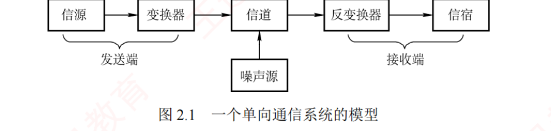
图 2.1 一个单向通信系统的模型（书 p.31）。实际的通信系统大多是双向的，可进行双向通信。 必记 · 数据通信系统三部分 + 噪声源
数据通信系统主要划分为信源、信道和信宿 三部分。信源 是产生和发送数据的源头；
信宿 是接收数据的终点，通常是计算机或其他数字终端装置。
信源发出信息后，需经发送变换器 转换为适合在信道传输的信号；该信号经信道传至接收端后，
由接收变换器 还原为原始信息，再交付给信宿。
信道是信号的传输介质，一条双向通信的线路包含一个发送信道和一个接收信道。
噪声源 是信道上的噪声及分散在通信系统其他各处的噪声的集中表示 。
我的补讲 · 这张图把两个定理的"作战位置"画出来了
书上说 ：噪声源是"分散在其他各处的噪声的
集中表示 "。
潜台词是 ：
实际噪声哪儿都有，模型里为了能用一个 S/N 描述整条链路，把它们统统折算到信道这一点。
所以能考 ：图上画在信道 ≠ 只产生于信道（选择题常这么设问）。
更重要的是——
这个建模约定正是香农定理"只需要一个信噪比"的前提。
信源 → 变换器 → ┌── 信 道 ──┐ → 反变换器 → 信宿
└─ 发送端 ─┘ ↑ └─ 接收端 ─┘
噪声源
奈氏准则管：信道这个方框（带宽有限 ）
香农定理管：信道 ＋ 噪声源（带宽 ＋ 信噪比 ） 陷阱 · 信道 ≠ 通信电路
一条可双向通信的电路往往包含两个 信道 ：一个发送信道、一个接收信道。
另外，多个通信用户共用通信电路时，每个用户在该通信电路都有一个信道 。
⟹ 「一条可通信的电路往往包含一个 信道」是错的。
记法：线路是物理的，信道是逻辑的，一条线上可以跑多个信道。
必记 · 信道的两种分法 · 基带与宽带 · 串行与并行
信道分类 ：按传输信号形式 分为模拟信道 （传模拟信号）与数字信道 （传数字信号）；
按传输介质 分为无线信道 与有线信道 。基带 vs 宽带信号 ：基带信号 是信源发出的未经过调制 的原始电信号，直接传送它称为基带传输 ；
宽带信号 是把基带信号调制到高频载波 上形成的信号，这种方式称为宽带传输 。串行 vs 并行传输 ：串行 ＝逐比特按序依次传输，适用长距离通信，如计算机网络 ；
并行 ＝若干比特通过多个通信信道同时传输，适用短距离，常用于计算机内部，如 CPU 与主存之间 。
知识串联 · 长距离为什么放弃并行
时钟偏移 并行传输的多根线，信号到达时间会有细微差异（时钟偏移 ），
距离越长偏移越大，接收端就对不齐了 ——这就是"并行只适合短距离"的物理原因。组原 ch6 总线 里「从并行总线（PCI）演进到串行总线（PCIe） 」用的是同一个理由；
USB、SATA 也全部改走串行。两科在这一点上说的是同一件事。
必记 · 三种通信方式与所需信道数
方式 能否双向 能否同时 信道数 书上给的例子 单向通信（单工） ✗ — 1 个 无线电广播、电视广播 半双工 ✓ ✗ 1 个 （同一信道分时 双向，无须两个物理信道 ）— 全双工 ✓ ✓ 2 个独立信道 （每方向一个）—
我的补讲 · 半双工是唯一会记反的一格
书上说 ：半双工可在同一信道上分时双向传输，无须两个物理信道 。
潜台词是 ：它"双向"但"不同时"，所以省下了一个信道。
所以能考 ：选择题最爱把半双工写成"需要 2 个物理信道"。
判据：题干里有没有"同时 "这个副词 ——有它就是全双工要 2 个。本章"半双工"会出现三次，原因全都一样 ：
一根同轴电缆的总线以太网 （2.2 习题）· 集线器组网 （2.3.2）· 对讲机。
共享介质 ⟹ 要争用 ⟹ 半双工 ，这条推理链请现在就记住，2.3 节直接用。
知识串联 · 「共享 ⟹ 争用 ⟹ 半双工」这条链贯穿三章
共享介质 本章 2.2 的一根同轴电缆总线以太网 、2.3.2 的集线器 ，
都因为"多台主机共享同一条通路"而只能半双工 。争用 ⟹ ch3 的 CSMA/CD （先听后发、边发边听、冲突停发、随机重发）
就是为"共享介质如何分配"设计的；ch3 的信道复用（频分/时分/波分/码分） 是同一问题的另一类解法。独占 换成交换机 后每端口独占链路 ⟹ 不冲突 ⟹ 可全双工 ⟹ CSMA/CD 退休。
本章只是把这条链的起点（物理层为什么会冲突） 讲清楚。
3. 速率、波特与带宽
考点追踪 · 比特率与波特率的关系（2011、2014、2022）
必记 · 速率的两种描述
速率 指数据传输速率，表示单位时间内传输的数据量，常有两种描述形式：码元传输速率 （也称波特率 或调制速率 ）：数字通信系统每秒传输的码元数 ，单位波特（Baud） 。
码元既可以是多进制的，也可以是二进制的，码元速率与进制无关 。信息传输速率 （也称比特率 ）：数字通信系统每秒传输的比特数 ，单位 b/s 。【注意】 波特和比特是两个不同的概念，但数量上有一定关系：
若一个码元携带 n 比特的信息量，则波特率 M Baud 对应的比特率为 M×n b/s。
我的补讲 · 本章的"零号公式"，三个方向都要能走
C ＝ B × log₂V
C ＝ 比特率（b/s）· B ＝ 波特率（Baud）· V ＝ 码元状态数
正问：给 B、V 求 C —— 习题「2000Baud × 8 种状态 ⟹ 6000b/s」
反问一：给 C、V 求 B —— 2011 真题 「2400b/s、4 相位 ⟹ 1200Baud」
反问二：给 C、B 求 V —— 习题 07「4kb/s ÷ 1000Baud ⟹ n=4 ⟹ V=16」
⚠️
最高频的错法：除的时候除了 V 而不是 log₂V。
2011 真题的干扰项 A（600Baud）就是 2400÷4 造出来的。
记住：公式里跟着 log₂ 的永远是状态数 V，参与乘除的永远是 log₂V。
📌
"码元速率与进制无关"这句是奈氏准则的立论基础 ：
正因为如此，奈氏才能只限制波特率（2W）而不限制 比特率，多元调制才有意义。 陷阱 ⚠️⚠️ · 「带宽」在本章和 ch1 是两个东西
在模拟通信中 ，带宽（也称频带带宽 ）表示信道所能传输信号的频率范围 ，
即最高频率与最低频率之差，单位是赫兹（Hz） 。而在数字通信或计算机网络中 ，带宽用来表示通信线路所能传输数据的能力，
即最大数据传输速率 ，此时带宽的单位不再是 Hz，而是 b/s 。本章两个公式里的 W 全都是"Hz 那一个意思"。
题干说"带宽 10Mb/s"，那是速率，不能直接塞进 2W·log₂V ；
说"带宽 4MHz""频带宽度 8kHz"才是能塞公式的 W。 习题 14 就靠这条送分 ：题干给"频率范围 3.5~3.9MHz"，
必须相减 得 W ＝ 0.4MHz；直接拿 3.9 去算，正好掉进干扰项 11.7Mb/s（＝3.9×3）。
知识串联 · 两个"带宽"在四科里的分布
Hz 口径 本章的奈氏、香农 · 组原 ch6 总线的"总线频率"。b/s 口径 ch1 全章 （发送时延、时延带宽积、瓶颈带宽）· ch3 以太网 10/100/1000Mb/s ·
组原 ch6「总线带宽 ＝ 宽度 × 工作频率 × 通道数 × 方向数」的结果单位。⟹ 跨章做综合题时，第一件事就是确认这个"带宽"是哪一种。
看单位：Hz ⟹ 公式里的 W；b/s ⟹ 它本身就是速率。 两者之间没有 固定换算——
从 W 到 C 要经过 2·log₂V 或 log₂(1+S/N)，系数取决于调制方式和噪声。
📄 p.31
2.1.2 信道的极限容量 ← 全章第一重心：12 页里 7 道真题落在这一节
必记 · 失真的四个影响因素
任何实际的信道都不是理想的，信号在信道上传输时会不可避免地产生失真。
只要接收端能够从失真的信号波形中识别出原始信号，这种失真对通信质量就没有影响 ；
然而，若信号失真严重，则接收端就无法正确识别每个码元。码元传输速率越高、传输距离越远、噪声干扰越大或传输介质质量越差，接收端波形的失真就越严重。
我的补讲 · 这四个因素就是本章 20 页的目录
书上说 ：四个因素会让波形失真更严重。
潜台词是 ：
物理层这一章要解决的，就是"信号跑着跑着会变形"这一件事，
而这四个因素各由本章的一块内容负责。
因素 本章哪里治它 码元速率越高 2.1.2 奈氏准则 给出速率上限 2W 传输距离越远 2.3.1 中继器 （数字）/ 放大器（模拟） 噪声干扰越大 2.1.2 香农定理 把 S/N 写进公式 介质质量越差 2.2 传输介质 （屏蔽层、光纤抗干扰）
所以能考 ：这句话本身就是判断题素材（四个因素全选）；
更重要的是那句前提——
"只要能识别出来，失真就没有影响" ，
说明物理层追求的不是"不失真"，是"失真到还能认出来" 。
1. 奈奎斯特定理（奈氏准则）
考点追踪 · 奈氏准则的应用（2009、2014、2022、2023） ← 本章第一考点，四年考四次
必记 · 码间串扰与奈氏准则
实际信道所能通过的
频率范围总是有限的 。信号中的许多高频分量往往无法通过信道，会在传输中衰减，
导致接收端收到的信号波形
失去码元之间的清晰界限 ，这种现象称为
码间串扰 。
奈奎斯特定理 指出：在
理想低通信道（无噪声、带宽有限） 中，为避免码间串扰，
极限码元传输速率为 2W 波特 ，其中 W 是信道的
频率带宽（单位为 Hz） 。
若用 V 表示每个码元的
离散电平数目 （不同码元的种类数），则
理想低通信道的极限数据传输速率 ＝ 2W·log₂V （单位为 b/s） 必记 · 奈氏准则的三条结论
1）在任何 信道中，码元传输速率存在上限 。若超过该上限，则会产生严重码间串扰，导致接收端无法正确识别码元。信道带宽越大，其传输码元的能力越强。 奈氏准则仅限制码元传输速率，并未限制每个码元所能承载的信息量（比特数） ，
因此信息传输速率仍可采用多元调制（如 QAM-16、QAM-64） 来提升。
我的补讲 · 为什么是 2W，以及第 ③ 条为什么最值钱
书上说 ：极限码元速率是 2W，且不限制每码元比特数。
潜台词是 ：奈氏准则只管"横轴"——每秒能发几个码元；至于每个码元里装多少比特，它不管。 所以能考 ：波特率封顶之后，唯一的提速手段就是把 V 做大（QAM-16 → 64 → 256）。2W 的直觉版理解 ：一个正弦周期能分辨出两个电平变化点 ，
所以带宽 W Hz 的信道每秒最多容纳 2W 次可分辨的波形变化。
这与 PCM 采样定理"采样频率不得低于最高频率的 2 倍"是同一条道理。 但"不限制"不等于"能无限提" ——真正给每码元比特数封顶的是香农定理
（2.4 疑难点 3 原话：每个码元所能可靠 携带的比特数是有限的 ）。
两个定理一个管横轴、一个管纵轴，合起来才是完整的天花板。
陷阱 · 「码元速率上限」与「数据速率上限」是两个式子
极限码元 传输速率（波特率）＝ 2W Baud
极限数据 传输速率（比特率）＝ 2W·log₂V b/s
选择题最爱把这两个量对调着问（"式子都对，但答的不是那个量"）。
读题时先圈出题干里的"码元 / 数据"这两个字。 2. 香农定理
考点追踪 · 香农定理的应用（2014、2016） · 信道带宽的影响因素（2014） · 奈氏准则与香农定理的对比（2017）
必记 · 香农定理与信噪比的两种记法
实际信道存在
高斯白噪声 。香农定理给出了
带宽受限且有高斯噪声干扰 的信道的极限数据传输速率。
当速率不超过该极限值时，理论上可以实现任意低的误码率。
信道的极限数据传输速率 ＝ W·log₂(1 + S/N) （单位为 b/s）
W ＝ 信道频率带宽（Hz）· S ＝ 信号平均功率 · N ＝ 噪声功率
S/N ＝ 信噪比 ＝ 信号平均功率与噪声平均功率之比信噪比有两种表示形式 ：
无单位记法 时 信噪比 ＝ S/N；
分贝（dB）记法 时 信噪比 ＝
10·log₁₀(S/N) （单位 dB）。例：S/N ＝ 1000 时信噪比为
30dB 。
⚠️
使用香农定理计算信道的极限数据传输速率时，信噪比应采用无单位记法 。 必记 · 香农定理的四条结论
1）信道带宽或信噪比越大，信息的极限传输速率越高。 给定的带宽和信噪比 ，信息传输速率的上限是确定的 。只要实际信息传输速率低于该极限值，就能找到某种方法实现近似无差错传输。 香农定理得出的是理论极限，实际信道能达到的传输速率要比它低不少。
我的补讲 · 分贝换算是香农题的"第 0 步"，漏了必错
书上说 ：使用香农定理时信噪比应采用无单位记法。
潜台词是 ：
题干给的 30dB 是对数刻度 ，直接塞进 log₂(1+30) 会算出完全不同的数。
所以能考 ：本章
2016、2017 两道真题 + 习题 13、17 全部用 30dB ，
不会换算就一道都做不了。
dB → 比值： S/N ＝ 10^(dB ÷ 10) 每 10dB 乘 10 倍
比值 → dB： dB ＝ 10 · log₁₀(S/N)
dB 10 20 30 40 90 S/N 10 100 1000 10⁴ 10⁹ log₂(1+S/N) ≈3.46 ≈6.66 ≈10 ≈13.3 ≈29.9
⭐⭐
考场救命近似：2¹⁰ ＝ 1024 ≈ 1001 ⟹ log₂1001 ≈ 10 。
看到 30dB 就可以直接写「香农极限 ≈ 10W」 （W 单位 Hz 时结果单位 b/s）。
2016 真题：8kHz × 10 ＝ 80kb/s，再乘 50% ＝ 40kb/s，全程不用计算器。 我的补讲 · 结论 ④ 是 2016 真题那句"50%"的来源
书上说 ：香农得出的是理论极限，实际要比它低不少。
潜台词是 ：命题人可以在题干里随手加一句"实际速率为理论值的 x%"，这不是刁难，是教材写过的事实。
所以能考 ：2016 真题的干扰项 D（80kb/s）就是"算完理论值忘了乘 50%" ——
算到 80 就交卷，是本题最主要的失分方式。 结论 ③ 的分寸也要抠 ：说的是"近似 无差错""能找到某种方法 "——
香农定理是存在性定理，它保证有办法，但不告诉你是什么办法。
那个办法就是差错控制编码。
知识串联 · 香农保证"存在"，第 3 章给出"办法"
差错控制 香农第 ③ 条结论里的"某种方法"，
就是 ch3 数据链路层的 CRC 循环冗余校验与海明码 。
本章说"理论上能做到任意低误码率"，ch3 才告诉你具体怎么做。 噪声 组原 ch6 总线 里"信号完整性"、
本章 2.2 里"屏蔽层/绞合抵消干扰"、本节 的 S/N——
三处说的是同一个物理量在不同层次的表现：介质决定 S/N，S/N 决定信道容量。
我的补讲 ⭐⭐ · 本章第一分界线：什么时候用哪个公式
奈氏准则
C ＝ 2W·log₂V 带宽 ，适用无噪声 的理想信道码元速率 （横轴）不限制 每码元比特数外形特征：公式前面有个 2
香农定理
C ＝ W·log₂(1+S/N) 带宽 ＋ 信噪比 ，适用有噪声 的实际信道每码元可靠比特数 （纵轴）S/N 必须用无单位记法 外形特征：前面没有 2，括号里有个 +1
🔑
三句话口诀（本章 9 道计算真题全靠它分流） ：
只给「带宽 ＋ 状态数 / 进制」 ⟹ 只用奈氏 （2009 · 2022 · 2023）
只给「带宽 ＋ 信噪比」 ⟹ 只用香农 （2016）
两样都给了 ⟹ 两个都算，取 min （习题 12 · 习题 17）
⚠️
还有第四种问法：让两者相等 ，反求 V ——
这就是 2017 真题 。
它的解法关键是把两边的 W 约掉 ：题干根本没给带宽，很多人会卡在"条件不全"上。
凡是"两个极限速率作比较"的题，带宽一定会约掉，不必去找它。 我的补讲 · 「取 min」的三道题，瓶颈会换人
书上说 ：实际速率受限于二者中的较小值。
潜台词是 ：
"谁是瓶颈"不是固定的 ，条件一变就可能换人。
所以能考 ：习题 17（2017 那一类）就是靠"瓶颈换人"设的坑。
题 条件 奈氏 香农 min ＝ 瓶颈 习题 12 4kHz · S/N=127 · 二进制 8kb/s 28kb/s 8kb/s（奈氏） 习题 17 10MHz · 30dB · QAM-32 100Mb/s ≈99.7Mb/s 香农 20MHz · 40dB · QAM-32 200Mb/s ≈265.8Mb/s 奈氏 （换人了！）
⟹
每一组条件都要各算一次，不能算完一次就沿用结论。
习题 17 的干扰项 2.6 ＝ 265.8÷99.7，正是"只算香农、忘了奈氏"造出来的。
📌
习题 12 的书上原话是"容易误选 A" （A ＝ 28000b/s，只用香农）——
那句不起眼的"二进制信号"其实是在给 V＝2。
本章凡出现"二进制信号""采用 X 种状态""QAM-N"，都是在悄悄给 V。 我的补讲 · 干扰项是怎么造出来的（本节 5 个已溯源）
我把本节计算题的错误选项逐个还原了一遍，造法只有五种，认出来就能反向排除：
造法 实例 怎么防 只做第一步就交卷 习题 11 的 8kb/s（只算了 2W）· 2016 的 80kb/s（忘乘 50%） 算完回读题干最后一问 漏掉公式里的那个 2 习题 29 的 8（24k÷3k）· 2022 的 400kb/s 先写「2W ＝ …」这一行 把状态数 V 当比特数用 2011 的 600Baud（2400÷4）· 习题 09 的 16kBaud 记住除的是 log₂V 照单全收非法/多余条件 习题 10 的 72kb/s （用了超过 2W 上限的 24k 采样率）拿奈氏上限先验证 题给的数 该减没减 / 只算一个公式 习题 14 的 11.7Mb/s（3.9 当 W）· 习题 17 的 2.6 （只算香农） 频率范围要相减；两条件都给就取 min
⭐
反过来用 ：
做完一道题，如果你的答案恰好等于"少乘一个 2"或"忘了最后一步"的结果，
那多半就是命题人给你准备的那个坑。 必记 · 奈氏与香农的对比（2017 真题考的就是这段）
奈氏准则仅考虑带宽对码元速率的限制，适用于无噪声的理想信道 ；
而香农定理同时考虑了带宽和信噪比，适用于有噪声的实际信道。
香农定理表明，在给定带宽和信噪比下，信息传输速率存在上限，
即每个码元所能可靠携带的比特数是有限的。
📄 p.33
2.1.3 编码与调制
必记 · 编码与调制的方向，以及四种组合
信号是数据的具体表示形式；数据无论是数字的还是模拟的，为了传输的目的，都要转换成信号。
将数据转换为数字信号的过程称为编码，将数据转换为模拟信号的过程称为调制。 数字发送器 转换为数字信号，也可通过调制器 转换为模拟信号；
模拟数据既可通过 PCM 编码器 转换为数字信号，也可直接以模拟信号形式传输。
由此形成了以下四种编码与调制方式。
我的补讲 · 这张 2×2 表就是本节的全部骨架
数据 ＼ 信号 → 数字信号（编码 ） → 模拟信号（调制 ） 数字数据 ① 基带编码 ：RZ / NRZ / NRZI / 曼彻斯特 / 差分曼彻斯特③ 数字调制 ：ASK / FSK / PSK / DPSK / QAM 模拟数据 ② PCM ：采样 → 量化 → 编码④ 直接传 ，或 AM / FM / PM
书上说 ：编码的终点是数字信号，调制的终点是模拟信号。
潜台词是 ：
命名只看终点 ，不看源头是数字还是模拟。
所以
PCM（脉冲编码调制）虽然名字里带"调制"两个字，做的却是"模拟数据 → 数字信号"，属于编码 那一格。
所以能考 ：「数字数据
编码 为
模拟 信号」这种说法
自相矛盾 （那条路存在，但它叫调制）。
🔑
方向记忆法（考场三秒） ：
调 制解
调 器（Modem）＝ 把数字信号送上
模拟 电话线
⟹
「调制」的终点一定是模拟信号。
⭐
格 ① 用于基带传输，格 ③ 用于频带传输 ——这正好接上 2.4 疑难点 2 的三个"带"。
1. 数字数据编码为数字信号
考点追踪 · NRZ 与 NRZI 编码的波形特性（2015） · 曼彻斯特编码的波形特性（2013、2015） · 差分曼彻斯特编码的波形特性（2021）
必记 · 基带编码的核心问题
数字数据编码用于基带传输 ，即在基本不改变信号频率 的情况下直接传输数字信号。
编码的核心在于如何用电平或跳变来表示二进制数 0 和 1。
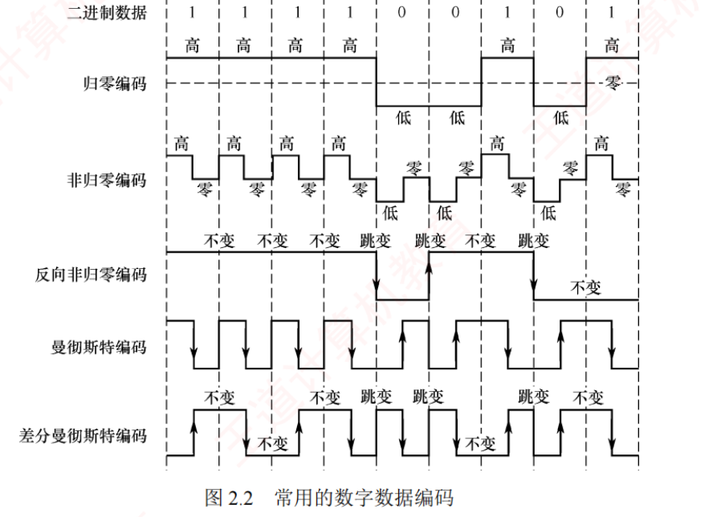
图 2.2 常用的数字数据编码（书 p.33）。同一串二进制数据 1111 0010 1 的五种编码波形，
图上直接标了「高/低/零」与「跳变/不变」。这张图缺了就讲不清本节，也做不了 2013/2015/2021 三道读图真题——必看。 必记 · 五种编码的规则原文
1）归零（RZ）编码 ：用高电平表示 1，低电平表示 0（或相反），每个码元中间都会跳变回零电平（"归零"） 。
接收方可利用这一跳变来调整自身的时钟基准，从而实现收发双方的自同步 。
但由于归零过程占用了一部分带宽，传输效率会受到一定影响 。非归零（NRZ）编码 ：与 RZ 的区别是不进行归零 ，整个周期都可用于传输数据，因此编码效率最高 。
但由于缺乏内在时钟信息，收发双方需额外时钟线来实现同步 。反向非归零（NRZI）编码 ：以码元起始处是否有跳变来表示数据：无跳变表示 1（或依协议约定），有跳变表示 0 。
跳变本身可用于辅助时钟恢复，兼顾了 NRZ 的高效率与一定的自同步能力，并且避免了 RZ 的带宽浪费 。
USB 2.0 等标准采用此编码。 曼彻斯特编码 ：每个码元中间都有一次电平跳变，该跳变同时承担时钟同步与数据表示功能。
常用下降沿（高→低）表示 1，上升沿（低→高）表示 0 ，或采用相反的约定。差分曼彻斯特编码 ：同样每个码元中间都有电平跳变 ，与曼彻斯特不同的是，
该跳变仅用于时钟同步，而不表示数据 。数据由码元起始处是否有跳变决定：无跳变表示 1，有跳变表示 0。
这种方式具有更强的抗干扰能力 。传统以太网采用的就是曼彻斯特编码，而差分曼彻斯特编码常用于令牌环网等高速网络。
必记 · 表 2.1 常见数字编码方式的特性对比（原表重排，不裁图）
特性 归零编码 RZ 非归零编码 NRZ 反向非归零 NRZI 曼彻斯特 差分曼彻斯特 自同步能力 有 无 需增加冗余位 有 有 浪费带宽 浪费 无 不太浪费 浪费 浪费 抗干扰能力 弱 弱 弱 强 强
我的补讲 · 这张表只有一条规律：自同步能力都是拿带宽换的
书上说 ：NRZ 编码效率最高，但缺乏内在时钟信息。
潜台词是 ：NRZ 那一列全是"最省但最弱" ——不浪费带宽（效率最高），代价是既没同步能力、抗干扰又弱。所以能考 ：「哪种编码效率最高」（NRZ）、「哪种不含同步信息」（NRZ）——两问同一格。习题 06 的答案里有一句正文没写 的话，价值极高 ：
「曼彻斯特编码和差分曼彻斯特编码所占的频带宽度是原始基带宽度的 2 倍 」。
这句给了表里"浪费带宽"三个字一个定量 解释：每比特要两次电平变化 ⟹ 对信道带宽的要求翻倍。
凡是"习题答案里比正文多说了一句"的地方，都是高价值考点 ——命题人和你一样是从这本书出发的。NRZI 那格写的不是"有/无"而是"需增加冗余位 "，属于第三档 ：
它靠"遇 0 跳变"能恢复部分时钟，但连续一长串 1 时完全没有跳变 ，
所以实际协议（USB 2.0）要配合位填充 强行插跳变。
我的补讲 ⭐⭐ · 读波形题的通用三步法（本章三道真题全靠它）
五种编码的差别，浓缩成"看哪里、看什么"两列：
编码 看哪里 看什么 约定 NRZ 整个码元 电平绝对值 高＝1 低＝0 NRZI 码元起始处 有无跳变 无跳变＝1 有跳变＝0 曼彻斯特 码元中间 跳变方向 ↓＝1 ↑＝0（或相反，两种都合法 ） 差分曼彻斯特 码元起始处 有无跳变 无跳变＝1 有跳变＝0（唯一约定 ） RZ 码元中间 归零（同步用） 数据看前半段电平
🔑
三步法 ：
① 数虚线，确定每个码元的边界 （真题一般 8 个码元）
② 按上表确定看中间还是看起始 ，逐位翻译
③ 曼彻斯特读出来若不在选项里，整串取反再找一次
（差分曼彻斯特不用 取反——它只有一种约定）
⚠️
码元边界 处的跳变要无视 ——那只是为了让下一个码元能从正确电平起跳，
不携带信息 。
这是读图最容易被带偏的地方。
⭐
NRZ 与 NRZI 一秒辨别 ：把波形和比特串上下对齐，
若"高电平 ↔ 1"处处成立就是 NRZ；若要看"有没有跳变"才对得上就是 NRZI。 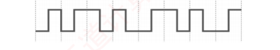
2013 统考真题 （也是习题 08，同一张图、同一组选项 ）：10Base-T 网卡接收到的信号波形。
🐍 逐像素解码：半码元序列 LH|LH|HL|HL|LH|HL|HL|LH，跳变方向 ↑↑↓↓↑↓↓↑
⟹ 按「↑＝0、↓＝1」得 0011 0110 （反约定得 1100 1001，不在选项里）。
本题的真正门槛是"知道 10Base-T ＝ 传统以太网 ⟹ 曼彻斯特编码"。 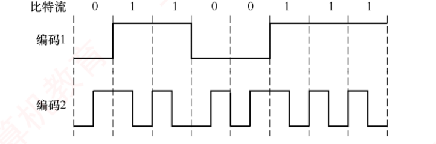
2015 统考真题 ：对比特流 01100111 的两种编码结果。
🐍 逐像素解码：编码 1 的电平序列 L H H L L H H H 与比特串一一对应、比特内无跳变 ⟹ NRZ ；
编码 2 每比特中间都有跳变 ，方向 ↑↓↓↑↑↓↓↓ 与比特串对齐 ⟹ 高→低＝1、低→高＝0 的曼彻斯特 。
本题给了明文比特串，是"反向验证"型，比 2013/2021 容易。 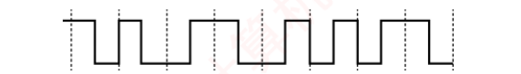
2021 统考真题 ：一段差分曼彻斯特编码信号波形，答案 1011 1001 。
🐍 逐像素解码：半码元 HL|HL|LH|HL|LH|LH|LH|HL，
先验证 8 个比特每个中间都有跳变 （差分曼彻斯特的必要条件，也证明分段正确），
再看起始处：无·有·无·无·无 ·有·有·无 ⟹ 1011 1001 。陷阱 🔍 · 书上这道 2021 真题的解析自相矛盾 ，别照抄
书上解析的逐位叙述是：「第 1 位无跳变（1），第 2 位有跳变（0），第 3 位无跳变（1），第 4 位无跳变（1），
第 5 位有跳变（0） ，第 6 位有跳变（0），第 7 位有跳变（0），第 8 位无跳变（1），得到比特串为 1011 1001。」按它自己的叙述连起来是 1 0 1 1 0 0 0 1 ＝ 1011 0001（选项 B） ，与它给出的答案 A（1011 1001）矛盾。 我做了逐像素解码复核 ：第 4 位末尾与第 5 位开头都在低电平，两者之间只有一条码元边界虚线，电平没有变化
⟹ 应为「第 5 位无 跳变（1） 」，其余七位叙述无误。
⟹ 答案 A ＝ 1011 1001 正确，解析的第 5 位错。
做题时若照着这段叙述去核对，会怀疑自己读错了图——记住这一处。
知识串联 · 编码 ↔ 网络 ↔ 时钟
编码与网络 传统以太网（10Base-T）⟹ 曼彻斯特 （2013 真题靠这条才能做）·
令牌环网 ⟹ 差分曼彻斯特 · USB 2.0 ⟹ NRZI 。这三条对应关系是纯记忆点，必须背死。 时钟 NRZ"需额外时钟线"vs 曼彻斯特"把时钟嵌进数据"——
与组原里"并行总线要单独一根时钟线、串行总线靠编码内嵌时钟"是同一件事 。差分抗干扰 差分曼彻斯特为什么"抗干扰更强"？
因为它读的是相邻码元之间的变化 而非绝对电平方向——整条线被反相（双绞线两根接反）也不影响数据 。
而曼彻斯特一旦接反，所有 1 和 0 就全反了。
这与 DPSK vs PSK 、NRZI vs NRZ 是同一种思路，也与 2.2 双绞线"绞合抵消共模干扰"同源。令牌环用差分的理由 令牌环是环形 拓扑，信号绕环经过很多站点，每站接线极性可能不同 ，
用"看变化不看绝对值"的差分编码才不怕接反。
2. 模拟数据编码为数字信号（PCM）
必记 · PCM 三步
该过程通常采用 PCM（脉冲编码调制） ，包含三个步骤：采样 ：对模拟信号进行周期性采样，将其从时间 连续变为时间 离散。
根据奈奎斯特定理，采样频率不得低于信号最高频率的两倍。 量化 ：将采样所得的幅值 按预设分级取整，将连续的模拟电平转换为离散的数值。编码 ：将量化后的整数转换为对应的二进制码 。
我的补讲 · 顺序不能换，且这里的 2 倍与奈氏是同一个 2
书上说 ：采样 → 量化 → 编码。
潜台词是 ：前两步分别在横轴（时间）和纵轴（幅值） 上做离散化，第三步只是写成二进制。
必须先切成样点才有幅值可量化，量化成整数才有整数可编码 ——顺序有内在逻辑，不用死记。本章两处"2 倍"是同一条定理的两种用法 ：
奈氏准则的 2W （一个周期分辨两个电平变化点）与采样定理的"≥ 最高频率的 2 倍" 。PCM 唯一的计算题型 ：速率 ＝ 2·fmax × 每样点比特数 。
语音 4kHz、8 位量化 ⟹ 2×4k×8 ＝ 64kb/s ——这就是一路数字电话（DS0）的标准速率 。
ch3 讲时分复用时会用它拼出 E1 ＝ 32×64kb/s ＝ 2.048Mb/s，请现在就记住这个 64k。 量化必然带来误差 （量化误差）：分级越细（编码位数越多）误差越小，但码率更高 ——
这就是数字音频 8bit / 16bit / 24bit 的由来。
知识串联 · PCM 的 64kb/s 会在 ch3 变成 E1
离散化 PCM 的"采样（时间离散）＋ 量化（幅值离散）"，
与组原 里 A/D 转换、数学 里"连续函数的离散采样"是同一件事；
量化误差 ⟺ 组原里的舍入误差 ，都是"用有限位表示连续量"的必然代价。 64kb/s 语音 4kHz × 2（采样定理）× 8 位 ＝ 64kb/s ＝ 一路数字电话（DS0） ；
ch3 信道复用 里 E1 ＝ 32 × 64kb/s ＝ 2.048Mb/s 就是拿它拼出来的。
先在这里把 64k 记住，ch3 那张时分复用图就不用重新推。 2 倍 采样定理的"≥ 2 倍最高频率"与奈氏准则的 2W ——
本章两处 2 倍是同一条定理 ：一个周期需要两个可分辨点。
3. 数字数据调制为模拟信号
考点追踪 · 数字调制技术的分类与特点（2024） · 调制阶数与码元比特数的关系（2011、2022） · QAM 调制阶数与码元比特数的关系（2009、2023）
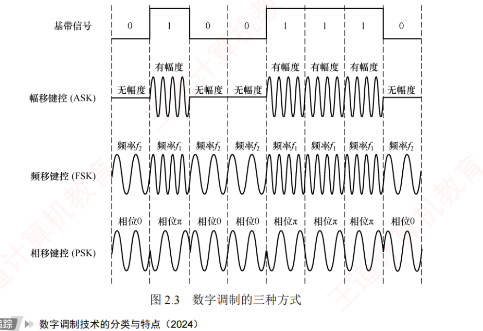
图 2.3 数字调制的三种方式（书 p.34）。基带信号 0 1 0 0 1 1 1 0，
下面三行分别是 ASK（无幅度/有幅度）、FSK（频率 f₂/f₁）、PSK（相位 0/π）。
2024 真题问"哪种需要 2 个不同频率的载波"，看 FSK 那一行标注即可——必看。 必记 · 四种数字调制
1）幅移键控 ASK ：通过改变载波的振幅 来表示 1 和 0（有载波/无载波）。容易实现，但抗干扰能力差。 频移键控 FSK ：通过改变载波的频率 来表示 1 和 0（f₁ / f₂）。容易实现，并且抗干扰能力强。 相移键控 PSK ：通过改变载波的相位 来表示 1 和 0（相位 0 和 π），它是一种绝对调相方式 。【注意】 与 PSK 不同，DPSK（差分相移键控）是一种相对调相方式 ，
它通过检测当前码元与前一个码元的载波相位差 来传输数字信息。
我的补讲 · 缩写第一个字母就是它改的东西
缩写 全称 改变载波的 要几个载波频率 特点 A SKA mplitude Shift Keying振幅 1 个 容易实现，抗干扰差 F SKF requency Shift Keying频率 2 个 ⟸ 2024 答案容易实现，抗干扰强 P SKP hase Shift Keying相位 （绝对 调相）1 个 — D PSKD ifferential PSK相位差 （相对 调相）1 个 抗参考相位漂移 QAM Quadrature Amplitude Modulation 振幅 ＋ 相位 1 个频率、2 路正交载波 同带宽下速率最高
书上说 ：ASK 抗干扰差，FSK 抗干扰强。
潜台词是 ：
噪声的本质就是叠加在信号上的随机幅度 扰动 ——
ASK 恰好把数据放在了噪声最爱动的那个维度上 ，而频率和相位受幅度噪声影响小得多。
所以能考 ：「哪种抗干扰能力差」永远是 ASK。
⚠️
QAM 是唯一容易误判的 ：它用
两路 载波（正弦 + 余弦），
但
两路频率相同、只差 90° 相位 （所以叫"正交"），
不是两个不同频率 。
2024 真题即使把 QAM 放进选项，答案仍是 FSK。 必记 · QAM 正交幅度调制
QAM ：在
载波频率相同 的前提下，
通过同时调制振幅和相位 形成复合信号，从而在有限带宽内实现更高的数据传输速率。
QAM 基于
正交载波 ，通常使用
两路载波，分别对应正弦波和余弦波 ；
两路载波的频率相同，但相位差 90° ，因此可在同一频带上独立传输而不会相互干扰。
以
QAM-16 为例：每路载波均有
4 种 不同的振幅，两路组合后可形成
16 种 不同的信号状态，
每个状态对应星座图上的一个点，代表一个
4 位 二进制数。
若将每路振幅调制成
8 种 ，则组合成
64 种 状态（
QAM-64 ），每个状态对应
6 位 二进制数。
假设波特率为 B，采用 m 个相位、每个相位有 n 种振幅，则
QAM 的数据传输速率 R ＝ B·log₂(m×n) （单位为 b/s）
【脚注】 各种参考资料中的常见写法是
16-QAM （数字在前），
但统考真题中的写法是 QAM-16 。
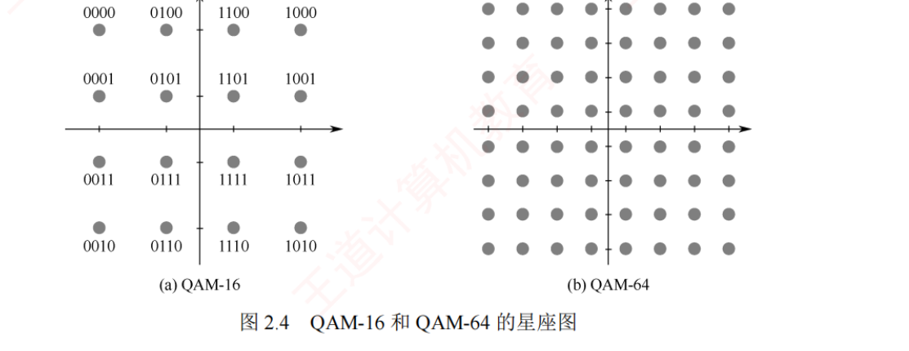
图 2.4 QAM-16 和 QAM-64 的星座图（书 p.35）。
横轴＝余弦波幅度，纵轴＝正弦波幅度；每个点＝一个信号状态＝一个二进制码字。
接收端判断收到的信号最接近哪个星座点 ，即可恢复原始数据。这张图是理解香农定理物理意义的钥匙——必看。 我的补讲 ⭐ · 星座图把"香农为什么限制每码元比特数"画了出来
书上说 ：接收端通过判断信号最接近哪个星座点来恢复数据。
潜台词是 ：
噪声会让接收到的点在星座图上"抖动" ；星座点挤得越密（阶数越高），
抖一下就跑到隔壁点上去了。所以能考 ：这正是
香农定理"每个码元所能可靠 携带的比特数是有限的"的物理图像 ——
信噪比决定了 V 最多能取多大 ，也就是
2017 真题 那道"奈氏 vs 香农求 V"的直观解释。
🔑
QAM 题永远两步 ：
① 相位数 × 振幅数 ＝ V（用乘不用加） ② log₂V ＝ 每码元比特数 。
题 相位 × 振幅 V 比特/码元 2009 真题 4 × 4 16 4 习题 15 8 × 2 16 4 习题 17 QAM-32 32 5 2023 真题 （反求）— 64 6
⚠️
QAM-x 里的 x 是状态数 V ，不是比特数 ：
算出 log₂V ＝ 6 要写 QAM-64 ，不是"QAM-6"。
把 V 直接拿来乘除是本节最高频的错法。 背景 · 星座图的具体编码值不用记
图 2.4 里 QAM-16 那 16 个点各自标着 0000 / 0100 / 1100 / 1000 … 的具体码字，
属于工程实现细节，统考从未考过"某个点对应哪个码字"。
看星座图只需要抓两件事：①点数 ＝ 状态数 V；②点越密对信噪比要求越高。
剩下的排列规律（格雷码）可以快速划过。
4. 模拟数据直接传输为模拟信号
必记 · AM / FM / PM
在某些场景下，模拟数据直接以模拟信号形式传输，无须数字化 。
例如传统电话系统中，语音信号通过双绞线直接传送到本地交换机。
此外，若需通过高频信道（如无线电波） 传输，则可采用
调幅（AM）、调频（FM）或调相（PM） 等模拟调制技术，将信号加载到高频载波上。
我的补讲 · 一眼分辨"被调的是数字还是模拟"
名字里带"键控 ／SK（Shift Keying）"的，被调的一定是数字 数据
（"键控"＝像按键一样在几个离散 档位之间跳）；只写"调 幅／调频／调相（AM/FM/PM）"的，被调的是模拟 数据 （连续变化）。FM 收音机就是这个 FM——它传的是连续的声音波形，不是比特。
四种方式的四个格子，靠这条命名规律就能对上号。
📄 p.42
2.2 传输介质
2.2.1 双绞线、同轴电缆、光纤与无线传输介质
必记 · 两类传输介质
传输介质 （也称传输媒体）是数据传输系统中发送器和接收器之间的物理通路 。可分为两类：导向传输介质 ，如铜线或光纤等，电磁波被约束沿固体介质传播 ；非导向传输介质 ，如自由空间（空气、真空或海水） ，电磁波在其中的传播称为无线传输 。
我的补讲 · 光纤传的也是电磁波，但它是导向 介质
书上说 ：导向介质的特征是"电磁波被约束 沿固体介质传播"。
潜台词是 ：分类依据不是"电还是光"，而是"跑不跑得出去"。
光被全反射约束在纤芯里 ，跑不出去 ⟹ 导向 。
所以能考 ：这也顺带解释了光纤"无串音干扰、保密性好、不易被窃听 "——
没有电磁泄漏可供旁路窃听。
而卫星通信"保密性较差"正是因为它是非导向的，波束照到哪儿谁都能收。
同一条分类依据，解释了两种介质相反的保密性——这就是分类的价值。
1. 双绞线
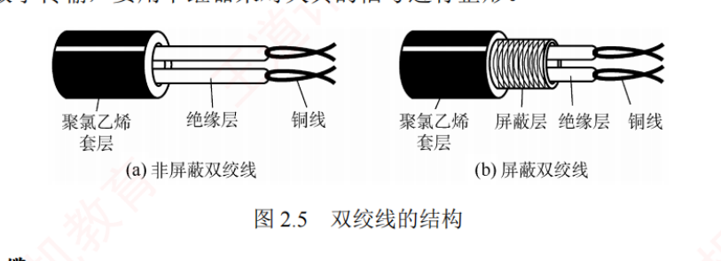
图 2.5 双绞线的结构（书 p.42）：(a) 非屏蔽双绞线 UTP＝聚氯乙烯套层/绝缘层/铜线；
(b) 屏蔽双绞线 STP＝多了一层屏蔽层 。 必记 · 双绞线的全部考点
双绞线是最常用 的传输介质，在局域网和传统电话网 中广泛使用。
它由两根相互绝缘、按一定规则绞合在一起的铜导线 组成。
绞合结构可有效减少相邻导线间的电磁干扰。
为进一步提升抗干扰能力，可在双绞线外加一层金属丝编织的屏蔽层 ，称为屏蔽双绞线（STP） ；
无屏蔽层的则称为非屏蔽双绞线（UTP） 。既可用于模拟传输，也可用于数字传输 ，通信距离通常为几千米至数十千米 。
其带宽取决于铜线的粗细和传输的距离。
距离太远时：对于模拟传输，要用放大器 放大衰减的信号；对于数字传输，要用中继器 对失真的信号进行整形。
我的补讲 ⭐⭐ · 本章第三分界线在这里第一次出现：放大器 vs 中继器
书上说 ：模拟传输用放大器，数字传输用中继器。
潜台词是 ：
两者的差别不是习惯，是能力上的本质区别 ——
数字信号只有 0/1 两种可能，中继器可以判决出到底是 0 还是 1，然后重新画一个标准方波 ；
模拟信号取值连续，放大器无从判断"这一点原本该是多少"，只能把整个波形（含噪声）一起放大 。
所以能考 ：
2.3 节习题 02 会再考一次 （"为了使数字信号传输得更远，可采用的设备是"⟹ 中继器）。
放大器 中继器 用于 模拟 信号数字 信号做什么 把衰减的信号放大 信号再生 ＝ 放大 ＋ 整形 对噪声 连噪声一起放大 ⟹ 引发失真重新判决后重画波形 ⟹ 减少失真能级联多少 越多失真越严重 每跳都"洗干净"（实际受时延 限制）
⭐
这就是数字通信优于模拟通信的根本原因之一 ，也是本章少数能"讲出道理"的记忆点。
我的补讲 · "绞合"和"屏蔽"是同一目标的两种手段
书上说 ：绞合可减少相邻导线间的电磁干扰；屏蔽层进一步提升抗干扰能力。
潜台词是 ：绞合的原理是差分抵消 ——两根线绞在一起，外界干扰对两根线的影响大致相同 ，
接收端取两线之差 时共同的干扰被抵消。
所以能考 ：「绞合的目的是（ ）」——答案永远是减少干扰 ，
而不是"提高速度/增大距离/增大抗拉强度"（那三个是抗干扰变好后的副作用 ，不是目的）。 屏蔽层不能 减少衰减 ：衰减是导线电阻造成的，屏蔽层管不着；治衰减要靠放大器/中继器。
「屏蔽的好处是减少信号衰减」是常见错项。
知识串联 · 介质的名字会写进 ch3 的以太网标准里
10Base-X 命名 10 ＝ 10Mb/s · Base ＝ 基带传输 （呼应 2.1.1）·
最后一位是介质 ：5 ＝ 粗同轴（每段 500m，5-4-3 规则的舞台） 、
2 ＝ 细同轴 、T ＝ Twisted pair 双绞线（2013 真题的 10Base-T） 、F ＝ Fiber 光纤 。
ch3 讲以太网时这套命名会正式登场，本章先认脸。 介质 → 信道容量 2.2 讲的每种介质，最终都在决定 2.1.2 两个公式里的 W 和 S/N ：
屏蔽好 ⟹ S/N 高；频率高（光纤 10¹⁴MHz）⟹ W 大。
介质是因，信道容量是果——这是本章两节之间的主干道。
2. 同轴电缆
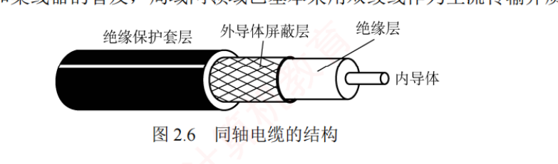
图 2.6 同轴电缆的结构（书 p.42）：由内到外＝内导体 → 绝缘层 → 外导体屏蔽层 → 绝缘保护套层 。 必记 · 同轴电缆的两种规格
同轴电缆由内导体、绝缘层、外导体屏蔽层和绝缘保护套层 构成。通常分为两类：50Ω 同轴电缆 ：主要用于基带数字信号传输 ，曾广泛应用于早期局域网 ；75Ω 同轴电缆 ：主要用于宽带信号传输 ，广泛应用于有线电视系统 。得益于外导体的屏蔽作用，同轴电缆具有良好的抗干扰性能，适合较高速率的数据传输。 局域网领域已基本采用双绞线作为主流传输介质。
我的补讲 · "带宽高"的因果链，一直连到香农公式
书上说 ：同轴电缆的高屏蔽性使它"既有很高的带宽，又有很好的抗噪性"。
潜台词是 ：屏蔽好 ⟹ 噪声小 ⟹ 信噪比 S/N 高 ⟹ 由香农定理，极限速率高。 所以能考 ：「同轴电缆比双绞线传输速率更快，得益于（ ）」——答案是更高的屏蔽性 ，
不是"铜芯更粗电流更大"，也不是"阻抗标准"。 这是 2.2 与 2.1.2 之间最漂亮的一处串联 ：
2.2 讲的每一种介质，最终都是在决定 2.1.2 那两个公式里的 W 和 S/N。
介质是因，信道容量是果。 50/75 记忆钩子 ：50 → 局（域网），75 → 电视 。
3. 光纤
必记 · 光纤的原理与结构
光纤通信利用光导纤维 传输光脉冲 来传递通信：有光脉冲表示 1，无光脉冲表示 0 。
可见光的频率约为 10¹⁴ MHz ，因此光纤系统具有极大的带宽潜力 。纤芯和包层 构成。纤芯直径极细，通常为 8~100μm ；包层的折射率略低于纤芯 ，光波通过纤芯进行传输。
当光从高折射率介质射向低折射率介质时，若入射角大于临界角，将会发生全反射 ，
使光线在纤芯与包层界面反复反射而向前传播。
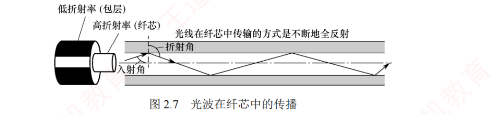
图 2.7 光波在纤芯中的传播（书 p.43）。图上标了低折射率(包层) / 高折射率(纤芯) / 入射角 / 折射角 ，
以及那句关键说明「光线在纤芯中传输的方式是不断地全反射 」。不看图讲不清全反射——必看。 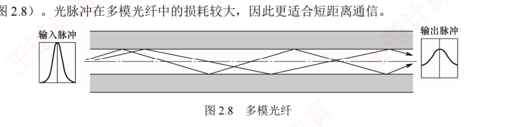
图 2.8 多模光纤（书 p.43）：多条不同角度入射的光线在同一根光纤中传输 。
注意图两端的输入脉冲窄、输出脉冲被抹宽 ——这就是"损耗较大、只适合短距离"的图示。 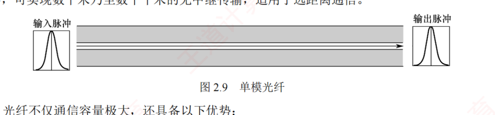
图 2.9 单模光纤（书 p.43）：光几乎无反射、沿直线传播 ，
输出脉冲与输入脉冲形状基本一致 ⟹ 衰减小，可实现数千米乃至数十千米的无中继传输 。 必记 · 多模 vs 单模 · 光纤四大优势
多模光纤 ：利用全反射原理，允许多条不同角度入射的光线在同一根光纤中传输 。
光脉冲在多模光纤中的损耗较大，因此更适合短距离通信。 单模光纤 ：当光纤直径减小至接近光波波长 时，仅允许单一模式的光传播，几乎无反射 。
其纤芯极细，需使用定向性优良的半导体激光器作为光源 。
单模光纤衰减小，可实现数千米乃至数十千米的无中继传输，适用于远距离通信。 光纤的四大优势 ：① 传输损耗小，中继距离长 ，对远距离传输特别经济；
② 抗雷电和电磁干扰性能强 ，在有大电流脉冲干扰的环境下尤为重要；
③ 无串音干扰，保密性好 ，不易被窃听或截取数据；
④ 体积小，重量轻 ，在现有电缆管道已拥塞不堪的情况下特别有利。
我的补讲 · "越细越强"是反直觉的，务必记牢方向
书上说 ：单模光纤纤芯极细，衰减小、传得远。
潜台词是 ：粗纤芯（多模）允许多条光线走不同长度 的路径，到达时间不同 ⟹ 脉冲被抹平展宽 ；
单模只有一条路，不存在路径长度差 ⟹ 脉冲不展宽。
所以能考 ：「光纤越粗，数据传输速率越高」是错的 ——恰恰相反，越细越好。
"模"越少越纯净，跑得越远。 还有两个易错点 ：
① 单模必须 用半导体激光器 （发光二极管定向性不够，只能用于多模），
「光源是发光二极管或 激光」这种说法在单模语境下是错的；
② 光纤不是中空的 ——由纤芯和包层构成，都是实心介质。"包层折射率略低于 纤芯"这个方向不能反 ：若包层折射率更高，光就漏出去了，全反射不成立。
4. 无线传输介质
必记 · 四种无线介质
（1）无线电波 ：具有较强的穿透能力，传播距离远 ，被广泛用于移动通信和 WLAN 。
其信号以全向方式扩散，接收端无须对准发射源即可建立连接，这是无线电波通信的重要优势 。（2）微波、红外线和激光 ：高带宽无线通信主要采用这三种技术，它们均需视距，具有强指向性 。微波通信 ：工作在较高频段，带宽大、通信容量高 。例：一个 2MHz 带宽的信道可容纳约 500 路语音信号 。
但由于微波沿直线传播，在地面传输时距离受限，通常需要中继站进行接力 。卫星通信 ：利用地球同步卫星 作为中继节点，有效突破了地面微波传输的距离限制。
优点 ：通信容量大、覆盖范围广、传输距离远；缺点 ：保密性较差，并且端到端传播时延较大 。红外线与激光通信 ：将电信号转换为相应的光信号，在自由空间中直接传播，
常用于短距离点对点链路（如遥控器）或室内通信 。但极易受障碍物阻挡，且无法穿透墙壁 。
我的补讲 · 无线介质分两派，判据是"要不要对准"
无线电波 微波 / 红外线 / 激光 方向性 全向扩散，无须对准 强指向性，均需视距 穿透能力 较强 差（红外/激光穿不透墙 ） 带宽 — 高带宽 应用 移动通信、WLAN 微波中继、卫星；遥控器 、室内通信
日常体验就是最好的记忆 ：
手机在口袋里也能连 Wi-Fi（全向、无须对准）；
红外遥控器必须对准电视（需视距、强指向性）。
📌
卫星通信为什么时延大 ：
地球同步卫星轨道高约 36000km ，
上行 + 下行一趟就是 7 万多公里，光速跑完约 270ms ——
这个时延由距离决定，与带宽无关 （正是
2014 真题"传播速度不影响传输速率" 的同一分工）。
📌
卫星"保密性较差" ：
波束覆盖范围极广，照到的地方谁都能收 ——
与光纤"无电磁泄漏、不易窃听"正好是两个极端。 📄 p.44
背景 · 这几处工程数字知道就行，不必背精确值
纤芯直径 8~100μm 、可见光频率约 10¹⁴MHz 、2MHz 微波信道容纳约 500 路语音 、
同步卫星轨道高度 ——这类数字统考只会拿来做"定性比较"（谁大谁小），
不会要求你代入计算 。
记住量级和相对大小即可，把精力留给 2.1.2 的两个公式。
2.2.2 物理层接口的特性
考点追踪 · 物理层接口的特性（2012、2018）
必记 · 物理层的任务与四类特性
物理层关注的是如何在各种传输介质上传输比特流，而非介质本身 。
由于网络中的硬件设备和传输介质种类繁多，通信方式也各不相同，
物理层应尽可能屏蔽底层差异，使数据链路层感知不到这些差异 ，从而专注于本层协议与服务的实现。物理层的主要任务是定义与传输介质接口相关的一些特性： 机械特性 ：规定接口所用接线器的形状和尺寸、引脚数目和排列、固定和锁定装置 等。电气特性 ：规定接口电缆中各条线路应遵循的电压范围、传输速率和距离限制 等。功能特性 ：定义每条线路上特定电平所代表的意义，并定义各条线路的具体功能 。过程特性 （也称规程特性 ）：描述各种功能事件发生的顺序和时序关系 。
我的补讲 ⭐⭐ · 本章第二分界线：电气特性 vs 功能特性（书上标了"易误选"）
书上说 （习题 09 解析原话）：
"本题易误选 功能特性。规定各条线上的电压范围，以及电缆长度的限制，属于电气特性。"
潜台词是 ：
两者都会提到"电压"，落点却完全不同。
电气特性 功能特性 回答的问题 "多少伏是合法的？ " "这条线／这个电平是干什么用的？ " 典型表述 电压范围 、传输速率、距离限制 某条线是数据线/控制线/时钟线 ；某电平表示何种意义 书上的两个例子 「+10V~+15V 表示 0，电线长度限于 15m 以内」 「数据线上的电压 +11V 表示二进制 1」
⚠️
这两个例子长得极像，差别只在一处 ：
前者给的是区间 （在划合法范围）＋ 长度限制；后者给的是具体值 + 点明了哪条线 （在赋予含义）。
🔑
三秒判据 ：句子里出现「
××V ~ ××V 」「
不超过 ×m 」「速率不高于」⟹
电气 ；
出现「
某条线 」「
表示/代表/含义 」⟹
功能 。
题干里只要带"长度限制"，答案基本就锁定电气特性了。 我的补讲 · 四类特性的"感官记忆法"，一次记牢
特性 记忆法 2018 真题里的对应选项 机械 看得见摸得着 ：形状、尺寸、引脚数目和排列接口形状 ✓ 电气 能用万用表量 ：电压范围、速率、距离限制信号电平 ✓ 功能 要查手册才知道 ：这条线/这个电平是什么意思引脚功能 ✓ 过程 （规程）要画时序图 ：先做什么后做什么—（2012 真题 考的就是它）
⭐
2018 真题的设计很漂亮 ：三个正确选项恰好各占一类特性，
剩下那个
「物理地址」就是不属于物理层的那个 ——它是
MAC 地址，属于数据链路层 。
⚠️⚠️
"物理地址"里的"物理"两个字是本章最大的名称陷阱 ：
它指的是"硬件固化的、不随网络位置变化的"，与"物理层"毫无关系 。
📌
把同一个引脚用四种方式描述一遍，边界就彻底清楚了 ：
"该引脚位于接口第 7 针" ⟹ 机械
"该引脚高电平范围 +3.3V~+5V" ⟹ 电气
"该引脚为高电平时表示请求发送" ⟹ 功能
"先拉高该引脚，再发送数据" ⟹ 过程 知识串联 · 「屏蔽底层差异」是分层思想的第一个实例
分层 ch1 讲过"每层只依赖下层提供的服务，不关心下层如何实现 "。
物理层"屏蔽底层差异、使数据链路层感知不到"就是这条原则的第一个落地 ——
现实中介质千差万别，物理层把它们全部包装成同一个抽象「能传比特流的管道」，
所以换网线不用改任何软件。 名不副实清单 408 网络里靠名字猜层次会翻车的地方，本章占了两处 ：
物理地址（MAC）⟹ 数据链路层 （2018 真题）· 传输介质 ⟹ 物理层之下的"第 0 层" （2.4 疑难点 1）。
另两处是 IP 地址 ⟹ 网络层、端口号 ⟹ 传输层。 接口特性 组原 ch7 的"I/O 接口" 也讲机械/电气/功能三类特性（如 USB、PCIe 接口标准），
那里的分类与本节完全同源 ——两科可以互相印证着记。
📄 p.46
2.3 物理层设备
我的补讲 · 这 2 页一道真题都没有，但千万别跳
本节在王道的题库里是 0 道统考真题 ——因为物理层设备的两道真题（2010、2020）
被按"对冲突域和广播域的影响"归到了 ch4/ch5 。
但那两道题的知识底座，全在这 2 页的九句原文里。
本节的正确读法是：把每一句都当成一张卡片背下来，因为它们后面全要用。
2.3.1 中继器
必记 · 中继器的原理与限制
中继器的主要功能是整形、放大并转发信号 ，以消除信号经过一长段电缆后产生的失真和衰减，
使信号的波形和强度达到所需的要求，从而扩大网络的传输距离 。
⭐ 其原理是信号再生 （而非简单放大衰减的信号）。
中继器有两个端口 ，数据从一个端口输入，从另一个端口输出。中继器连接的两端属于同一局域网中的不同网段 （而非不同子网） ，因此所连网段仍构成一个局域网 。
如果中继器发生故障，将影响相邻两个网段的正常工作。 网络标准中对信号的传播延迟范围有明确规定 ，中继器只能在此范围内有效工作，否则会引起网络故障。
例如在采用粗同轴电缆的 10Base-5 以太网规范中，互相串联的中继器数量不能超过 4 个 ，
而且由 4 个中继器串联的 5 段电缆中，仅有 3 段可挂接主机 ，
其余 2 段只能用作扩展通信范围的链路段，不能挂接主机 。这就是所谓的 "5-4-3 规则" 。
我的补讲 · 「再生 ＝ 放大 ＋ 整形」这六个字是本节第一关键词
书上说 ：中继器的原理是信号再生，
而非简单放大 。
潜台词是 ：
少了"整形"两个字，中继器就退化成放大器了。
整形＝重新判决 0/1 并重画标准方波 ⟹ 把噪声甩掉。
所以能考 ：习题 01 的错项就是「原理是将衰减的信号进行
放大 」——
漏了整形，就是错的 。
🔑
"5-4-3"三个数字对号入座 ：
5 ＝ 最多 5 段电缆
4 ＝ 最多 4 个中继器 串联 （段数 ＝ 中继器数 + 1 ）
3 ＝ 其中仅 3 段可挂接主机 ，另 2 段只是"延长线"
⭐
「段数 ＝ 设备数 + 1」与 ch1 母公式里的「k ＝ 链路段数 ＝ 中间设备数 + 1」是同一个数数方式 ——
网络里凡是"设备串起来"的场景，段数总比设备数多 1。数错这个 1 是这类题最常见的失分点。
⚠️
10Base-5 的 5 是"每段 500m" ，与 5-4-3 里的 5（段数）
纯属巧合，别混 。
对比 10Base-T 的 T ＝ Twisted pair（双绞线，2013 真题用到），
Base 都表示基带传输 ——这三个字母正好呼应 2.1.1 的基带传输。 2.3.2 集线器
必记 · 集线器的定义与行为
集线器（Hub）实质上是一个多端口的中继器 。
当集线器工作时，一个端口接收到数据信号后，由于信号在传输过程中已有衰减，
集线器便对该信号进行整形和放大 ，将其再生 为接近原始发送时的信号，
紧接着转发到其他所有（除输入端口外）处于工作状态的端口 。
若两个或多个端口所连节点同时发送信号，则会发生冲突，导致所有相关帧传输失败。 只起信号放大和转发作用 ，目的是扩大网络的传输范围，
而不具备信号的定向传送能力 ，即信息广播至所有端口，是标准的共享式设备 。【注意】中继器和集线器不具备缓存能力 ，当其连接两个不同链路层协议的网段时可能会出问题。
若两个网段的速率分别为 10Mb/s 和 10/100Mb/s，采用集线器连接后，则整个网络只能以速率 10Mb/s 工作 。在物理上是星形网络，但逻辑上仍是总线形网络 。
集线器的每个端口连接的是同一网络的不同网段 。此外，集线器只能工作在半双工模式，网络的吞吐率因而受到限制。
考点追踪 · 物理层设备对冲突域和广播域的影响（2010、2020） ← 王道把这两道真题归到了 ch4/ch5
必记 · 集线器与冲突域（【注意】框原文）
集线器不能分割冲突域，其所有端口都属于同一个冲突域。
集线器在一个时钟周期内只能传输一组信息。
当一台集线器连接的主机数量较多且多台主机频繁同时通信时，将导致大量冲突，使得集线器的工作效率很差。
例如，一个带宽为 10Mb/s 的集线器上连接了 8 台计算机 ，当它们同时工作时，
每台计算机平均可用的带宽仅为 10/8 Mb/s ＝ 1.25Mb/s 。
我的补讲 ⭐ · 「不具备缓存能力」一条，推出集线器的全部缺陷
书上说 ：中继器和集线器不具备缓存能力。
潜台词是 ：
没有地方暂存数据，就什么"翻译"和"缓冲"都做不了 。
所以能考 ：本节三条限制其实是同一个原因的三种表现——
限制 为什么 对应题目 不能做协议转换 没缓存就无法解封/重新封装帧 习题 06「中继器可以连接不同介质 的局域网，不能连不同协议 」 不能做速率适配 没缓存就无法吸收速率差 【注意】框「整网只能跑 10Mb/s」 只能半双工 、会冲突 没缓存就无法排队，只能靠争用 习题 17「同时发送 ⟹ 所有相关帧失败」
⭐
由此得到本节最精确的一条分界线 ：
中继器能跨"介质 "（光纤 ←→ 双绞线），不能跨"协议 "。
因为换介质只是把光脉冲换成电脉冲（物理层的事），换协议要解封重封（链路层的事）。 我的补讲 · 「物理星形、逻辑总线」是怎么来的
书上说 ：集线器组网物理上是星形，逻辑上仍是总线形。
潜台词是 ：物理拓扑看"线怎么接"，逻辑拓扑看"数据怎么流、会不会冲突"。 所以能考 ：因为集线器"不具备交换机所具有的交换表"，它发数据时没有针对性，只能广播
⟹ 所有主机共享同一条通路、会互相冲突 ⟹ 行为完全等同于一根总线 。换成交换机后 ：物理上仍是星形，逻辑上也变成了星形（点对点） ——
因为交换机有交换表，能定向转发、不再冲突。"逻辑拓扑变了"正是交换机取代集线器的本质。
我的补讲 · 集线器 vs 交换机：八行差别，一个根因
集线器 交换机（ch3 讲） 层次 物理层 数据链路层 识别 只认信号，无寻址功能 认 MAC 地址 ，有交换表 转发 广播 到除输入外的所有端口定向 转发到目标端口冲突域 所有端口共 1 个 每端口 1 个 带宽 共享 （总带宽 ÷ 主机数）独占 （每端口满速）双工 只能半双工 可全双工 缓存 无 有 （存储转发）逻辑拓扑 星形接线，逻辑总线 星形接线，逻辑也是星形
八行差别，追根溯源只有一条 ：
交换机能看懂帧（MAC 地址）且有缓存，集线器只能看见电平。
层次高一层，能力就全面升级——这是分层模型最直观的一次体现。
🔑
共享带宽公式 ：
每台平均带宽 ＝ 集线器总带宽 ÷ 主机数 。
10Mb/s ÷ 8 ＝ 1.25Mb/s（【注意】框）· 10Mb/s ÷ 5 ＝ 2Mb/s（习题 07）· 100Mb/s ÷ 20 ＝ 5Mb/s。
题干问"至多 "才有唯一答案 ——实际有冲突和重传，真实带宽还要更低。
知识串联 · 「谁能分割什么」这张表，从这里一直用到 ch5
层次 设备 识别什么 分割冲突域 分割广播域 物理层 中继器、集线器 只认比特/信号 ✗ ✗ 数据链路层 网桥、交换机 MAC 地址（帧） ✓ ✗ 网络层 路由器 、三层交换机IP 地址（分组） ✓ ✓
层次决定能力 能看懂什么，就能对什么做决策。
物理层只看到"一串高低电平"，连"这是给谁的"都不知道 ⟹ 只能广播、什么域都分不了。
冲突域 集线器"增大了冲突的范围" ⟹
ch3 的 CSMA/CD （先听后发、边发边听、冲突停发、随机重发）
就是为这个场景设计的；
冲突域与广播域的详细介绍在本书 4.7 节 （书上脚注指明）。
共享 ⟹ 半双工 本章"半双工"第三次出现，原因始终是
共享介质要争用 ——
2.1.1 的定义、2.2 的一根同轴电缆总线以太网、2.3.2 的集线器，三处同源。 📄 p.48
2.4 本章小结及疑难点 ← 四个疑难点全是分界线，必读
疑难点 1：传输介质属于物理层吗？它与物理层有何区别？
必记 ⚠️⚠️ · 传输介质不 属于物理层
传输介质不属于物理层。 尽管与物理层紧密相关，但从网络体系结构看，
它位于物理层之下，常被非正式地称为"第 0 层" 。区别在于 ：传输介质只承载电信号或光信号，无法区分信号所代表的比特值 ——即无法判断某一电平对应的是 1 还是 0；物理层通过定义电气、机械、功能和过程特性（如电压、时序、接口规范等），
将原始信号解释为有意义的比特流，供上层使用。
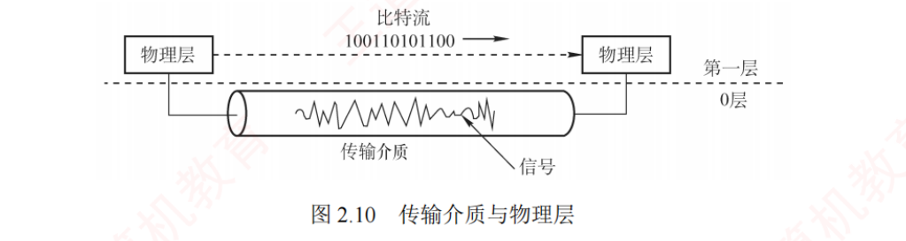
图 2.10 传输介质与物理层（书 p.49）。上方两个「物理层」方框之间标着比特流 100110101100，
虚线把「第一层」与「0 层」分开，下面是一根装着波形（信号）的管道（传输介质）。
传输介质是信号的"通道"，物理层是赋予其语义的"规则制定者"——一图讲清物理层到底干什么，必看。 我的补讲 · 本章最容易"想当然"答错的一题
书上说 ：传输介质位于物理层之下，被称为"第 0 层"。
潜台词是 ：
教材把"2.2 传输介质"放在物理层这一章里讲，不代表它属于物理层。 所以能考 ：这个反差
极适合出判断题 ，和 2018 真题的"物理地址不属于物理层"是同一族陷阱——
本章一共就这两处"名字/位置骗人"的地方，一起记。
传输介质（"第 0 层"） 物理层（第 1 层） 做什么 只承载 电信号或光信号把信号解释成有意义的比特流 能力边界 无法判断某一电平是 1 还是 0 靠四类特性 赋予含义 比喻 信号的"通道" 赋予其语义的"规则制定者"
疑难点 2：什么是基带传输、频带传输和宽带传输？
必记 ⭐⭐ · 三个"带"的分工（本章第四分界线）
基带传输 ：直接发送原始的数字信号（如高、低电平），不经过调制。它占用整个信道带宽 ，
通常用于短距离通信 ，比如局域网或计算机内部连接。
常用的编码方法包括不归零编码和曼彻斯特编码 。频带传输 ：当需要远距离或无线传输 时，必须把数字信号"搭载"到一个高频载波上 ，这个过程叫调制 ，
转换后的信号更适合在模拟信道（如电话线）上传输 。
它不仅让数字信号能在传统电话系统中传输，还支持多路复用，提高信道利用率 。
例：经过调制后一个码元可能代表 4 位二进制数据 ；电话线上网、Wi-Fi 等都属于频带传输 。宽带传输 ：指利用频分复用等技术，将一条物理线路划分为多个频带信道，每个信道可独立进行频带传输，互不干扰 。
这样多个信号可以并行传送，显著提升链路容量。
例：有线电视网能一边上网、一边看电视，正是利用了宽带传输技术。
我的补讲 · 一句话记忆 + 与 2.1.1 的口径差别
基带 ＝ 不调制 ，占满整个信道带宽 ⟹ 短距离（局域网、机内）
频带 ＝ 调制 到高频载波，能上模拟线 ⟹ 远距离/无线（电话线上网、Wi-Fi）
宽带 ＝ 频分复用 划出多个频带信道 ⟹ 一条线并行多路（有线电视）
⚠️
注意与 2.1.1 正文的口径差别 ：
2.1.1 讲的是信号 （基带信号＝未调制、宽带信号＝已调制到高频载波），是两分法 ；
这里讲的是传输方式 ，并且多了"宽带＝频分复用出多信道"这一层，是三分法 。
做题以题干用词为准：只出现"基带 vs 宽带"按两分法，三个词都出现按三分法。
📌
"占用整个信道带宽"这句要理解 ：
基带信号没被搬到某个高频段，它从直流一直铺到最高频，
所以一条线上只能跑一路 基带信号 ——
这正好反衬出宽带传输（频分复用出多路）的价值。
🔗
与 2.2 的 75Ω 同轴电缆互相印证 ：
"75Ω 主要用于宽带信号传输 ，广泛应用于有线电视系统 "——
疑难点 2 那个"一边上网一边看电视"的例子，跑的就是这条 75Ω 同轴电缆。 知识串联 · 「宽带 ＝ 频分复用」直接接到 ch3 的信道复用
频分复用 FDM 疑难点 2 说的"把一条物理线路划分为多个频带信道"，
就是 ch3「信道复用」一节的第一种方法 ；同族还有时分复用 TDM、波分复用 WDM、码分复用 CDM 。
本章只给了结论和一个例子（有线电视），四种复用的原理与计算在 ch3。 一线多用 "有线电视一边上网一边看电视"与组原 ch6 「总线上多个设备分时共享」、
OS 「CPU 分时给多个进程」是同一种思想的三种实现——
频分＝按频率分家，时分＝按时间分家。
疑难点 3：奈氏准则和香农定理的主要区别是什么？
必记 · 2017 真题考的就是这段（原文）
奈氏准则与香农定理从不同角度揭示了信道传输能力的极限 。奈氏准则仅考虑信道带宽限制 ，指出在给定带宽下，码元传输速率存在上限（与噪声无关） ，
超过该上限将因码间串扰而无法正确识别信号；
但它不限制每个码元所携带的比特数 ，因此可通过高阶调制（如一个码元表示多位） 提升信息传输速率。香农定理则适用于有噪声的实际信道 ，指出对于确定的带宽和信噪比，
信息传输速率存在一个不可逾越的理论上限，无论采用何种技术都无法突破 。
这意味着，要提高通信速率，只能通过增加带宽或改善信噪比，但二者在现实中均有物理限制。
它们共同构成了数据通信系统设计的理论基础。
我的补讲 ⭐ · 「与噪声无关」五个字是最深的一层
书上说 ：奈氏给出的码元速率上限与噪声无关 。
潜台词是 ：提高信噪比能让每个码元装更多比特（星座点画更密），但不能 让你每秒多发几个码元。
后者只由带宽决定，噪声再小也改不了。所以能考 ：「提高信噪比可以突破奈氏准则给出的码元速率上限」是错的 。另一句同样值钱 ："要提高通信速率，只能通过增加带宽或改善信噪比" ——
而 W 在香农公式里是「线性」因子、S/N 是「对数」因子 ：
W 翻倍 ⟹ C 翻倍；S/N 翻倍 ⟹ C 只涨一点点。
数感例子 ：S/N 从 1000 提到 2000，log₂1001≈9.97 → log₂2001≈10.97，只涨 10% ；
而带宽翻倍直接涨 100%。这就是现实中 5G、Wi-Fi 6 都在抢频谱带宽而不是一味加发射功率的原因。 回看习题 17 ：带宽 10→20MHz（×2）、信噪比 30→40dB（S/N ×10），
香农只从 99.7 涨到 265.8（约 2.67 倍）——其中"2 倍"来自带宽，"1.33 倍"才是那 10 倍信噪比换来的。
把这笔账算清楚，就真的理解香农公式了。
疑难点 4：信噪比明明是 S/N，为什么还要用 10log₁₀(S/N) 表示？
必记 · 为什么用分贝
信噪比可以用两种方式表示：①线性比值（无单位） ：如信号功率 100、噪声功率 1，则 S/N ＝ 100 ；
②分贝形式（单位 dB） ：此时信噪比为 10·log₁₀(S/N) ＝ 10·log₁₀100 ＝ 20dB 。等价 ，但分贝形式更实用 。因为在通信中，信号与噪声的功率差异往往极大，
例如信号可能是噪声的 10 亿倍 。若用线性值表示，则 1 后面有 9 个 0，不仅冗长，还容易数错；
而用分贝表示仅为 90dB ，简洁且不易出错。因此，分贝能高效、清晰地表达极大或极小的比值。
背景 · 这一段只需要记住换算式，其余是解释
疑难点 4 的论证部分（为什么工程上用对数刻度）不会单独出题 ，
考试要用的只有那个换算式和那张表 （见 2.1.2 我的补讲）：
S/N ＝ 10^(dB÷10) ，30dB ⟹ 1000 ⟹ log₂1001 ≈ 10 。
读到这里可以加速，把注意力留给前三个疑难点。
本章收尾 · 一页纸带走
我的补讲 · 考前十分钟只看这一块
① 两个母公式（必须闭眼写出）
奈氏（无噪声）：C ＝ 2 W·log₂V ← 前面有 2
香农（有噪声）：C ＝ W·log₂(1+ S/N) ← 前面没 2 ，括号里有 +1
零号公式 ：C ＝ B·log₂V （B＝波特率，除的是 log₂V 不是 V）
PCM ：C ＝ 2·fmax × 每样点比特数 （语音 4kHz/8位 ⟹ 64kb/s ）
QAM ：R ＝ B·log₂(m×n) （相位数 × 振幅数，不是加）
② 四条分界线
# 分界线 判据 1 奈氏 / 香农 / 两者取 min 给「带宽+状态数」用奈氏；给「带宽+信噪比」用香农；两样都给取 min ；让两者相等则反求 V（2017） 2 电气特性 / 功能特性 电压范围 、距离限制 ⟹ 电气 ；某条线、电平含义 ⟹ 功能 3 放大器 / 中继器 模拟用放大器（连噪声一起放大 ）；数字用中继器（再生＝放大+整形 ） 4 基带 / 频带 / 宽带 不调制占满信道 / 调制到高频载波 / 频分复用出多个频带信道
③ 五种编码「看哪里、看什么」
NRZ ：看整个码元的电平绝对值 （高=1） 效率最高、无自同步
NRZI ：看起始处有无跳变 （无=1） USB 2.0
曼彻斯特 ：看中间跳变方向 （↓=1，两种约定都合法 ）传统以太网
差分曼彻斯特：看起始处有无跳变 （无=1，约定唯一 ）令牌环网、抗干扰最强
RZ ：中间归零（同步用） 三个电平、费带宽
④ 三个纯记忆点 ：
传统以太网(10Base-T) ⟹ 曼彻斯特 · 令牌环网 ⟹ 差分曼彻斯特 · USB 2.0 ⟹ NRZI ；
50Ω ⟹ 基带/早期局域网 · 75Ω ⟹ 宽带/有线电视 ；
5-4-3 规则（5 段电缆 / 4 个中继器 / 3 段可挂主机） 。
⑤ 两处"名字骗人" ：
物理地址（MAC）⟹ 数据链路层 （2018 真题）·
传输介质 ⟹ 物理层之下的"第 0 层" （疑难点 1）。
⑥ 一处书误 ：
2021 真题解析「第 5 位有跳变(0)」应为「第 5 位无跳变(1)」 ，答案 A（1011 1001）本身正确。
知识串联 · 本章往后连到哪里
CSMA/CD 2.3 集线器"共享介质、一个冲突域、只能半双工" ⟹ ch3 数据链路层的 CSMA/CD ；
换成交换机后不冲突、可全双工，CSMA/CD 就退休了 。差错控制编码 香农"理论上可实现任意低误码率"里的那个"某种方法" ⟹ ch3 的 CRC 与海明码 。时分复用 PCM 一路语音 64kb/s ⟹ ch3 信道复用 里的 E1 ＝ 32×64kb/s ＝ 2.048Mb/s 。设备层次表 2.3 那张「谁能分割冲突域/广播域」的表 ⟹ ch3 交换机（分冲突域）· ch4 路由器（分广播域） ，
2010、2020 两道统考真题就考在那儿。 分组交换时延 本章综合应用题（存储转发、虚电路）用的是 ch1 的母公式 T ＝ k·r + (m−1)·r ，
再加上传播时延 k·p 与中间节点处理时延 (k−1)·m ；虚电路与数据报的正式讲解在 ch4 4.1.3。
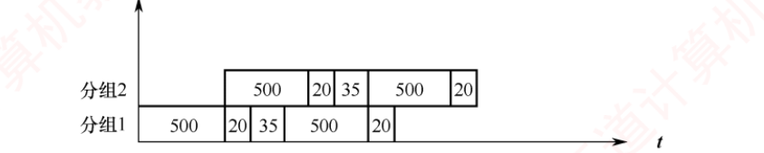
本章综合应用题 01 的时空图（书 p.41）：两个分组、5 个流水段（500·20·35·500·20 μs）。
铁律：不同分组的相同 流水段不能重叠 （同一条链路同一时刻只能服务一个分组）。
🐍 事件级排程复算：单分组 2075μs 、两分组 1575μs ，与书上时间表逐行吻合。
这与组原流水线里"同一功能部件不能被两条指令同时占用"是完全相同的约束。 我的补讲 · 本章 41 项复算的结论
我把本章所有能算的地方都用 Python 独立复算了一遍 ：
奈氏香农 18 道计算题逐题算 · 两道综合应用题用事件级排程对拍 · 三张波形图逐像素解码。
结果：全部与书上答案吻合，书上只有一处 叙述性错误 （2021 真题解析的第 5 位，见上文陷阱块）。额外验出三件书上没明说的 ：
① 习题 17 的精确值是 99.672 → 265.757Mb/s （书上按 100 → 260 估）；
② 2017 真题精确解是 V ≥ 31.64 （书上按 log₂V ≥ 5 得 V ≥ 32，结论一致）；
③ 综合题 01 若把 10000 比特拆成 4 个/10 个分组，总时间分别是 1325μs / 1175μs ——
拆得越细越快，但省下来的有上限 （固定开销＋处理时延累加），这正是分组交换"分组不是越小越好"的量化依据。